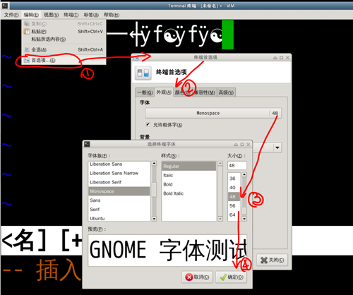
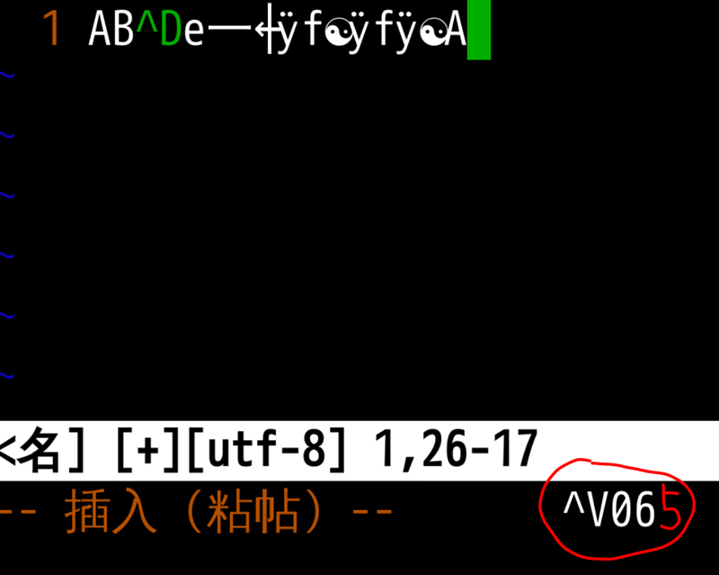
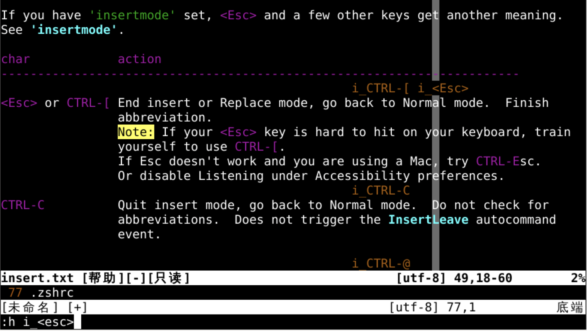
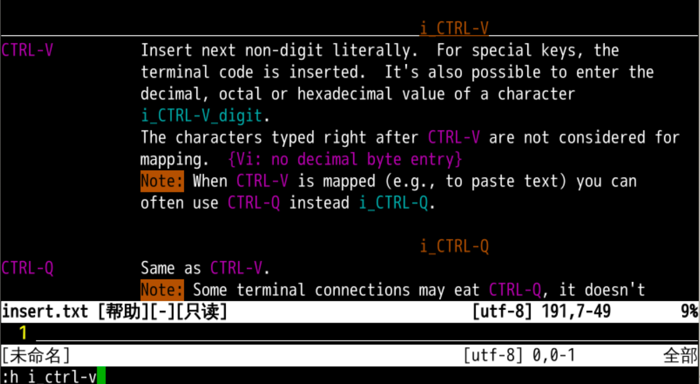
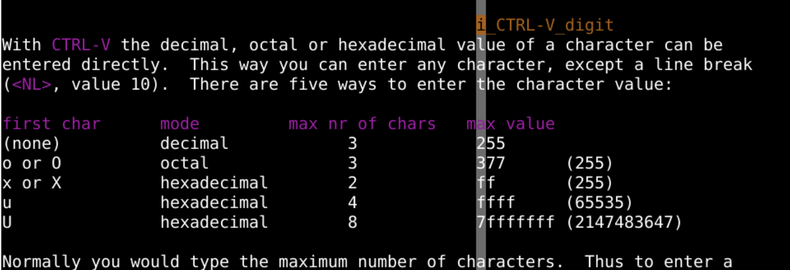
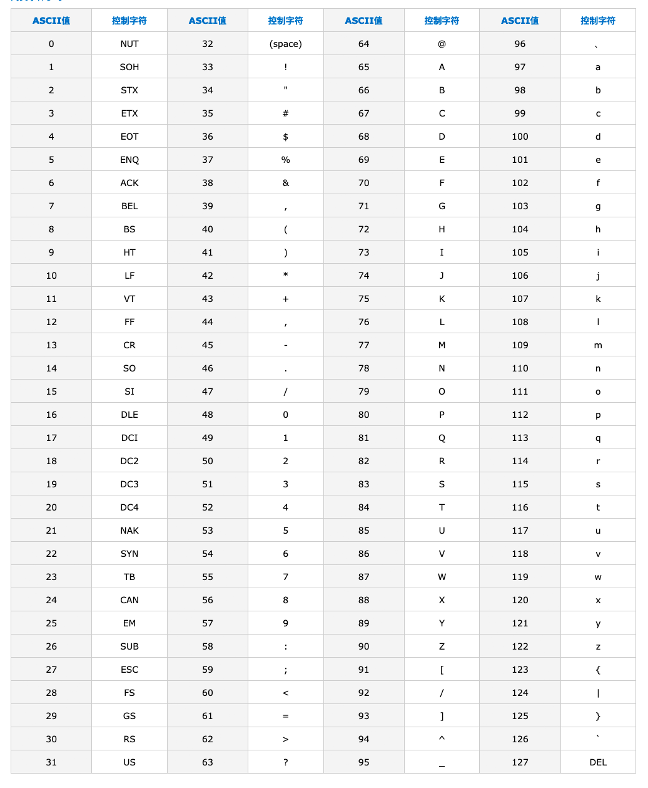
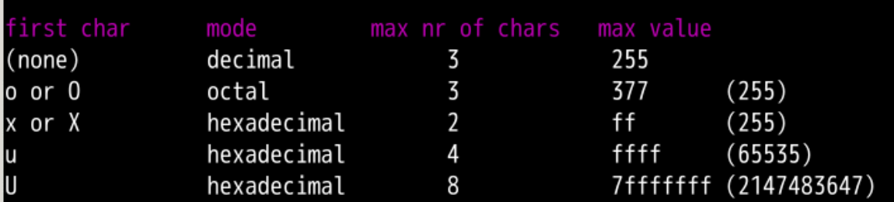
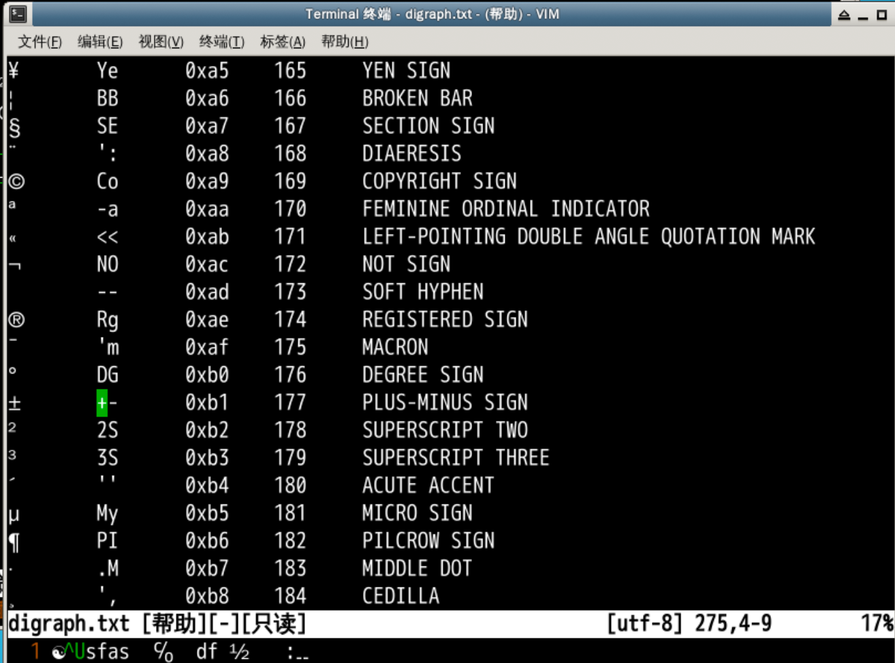
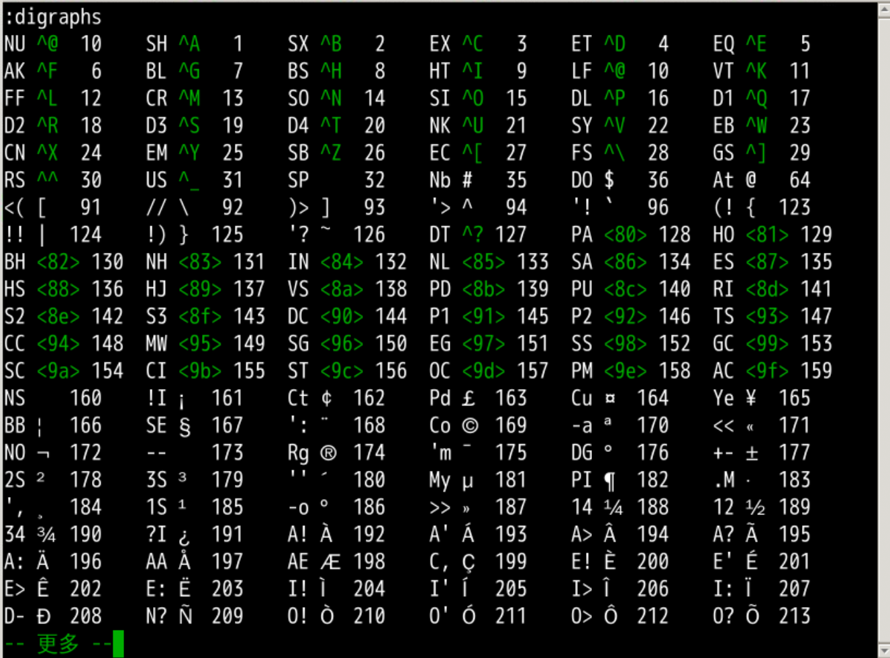

^ 意味着行开头$ 意味着行结尾
任意字符
. 代表任意字符 [a-z] 代表任意小写字母
字符数量
* 代表 0 到任意多个前字符+ 代表 1 到任意多个前字符? 代表 0 或 1 个前字符
行头行尾
\< 意味着单词开头\> 意味着单词结尾
我们掌握了在 vi 中光标运动的各种方法
ls -l > oeasy.txt
ll > oeasy.txt
vi oeasy.txt

065A字符插入 状态下ctrl + v
:h i_<esc>insert（插入状态下的）
:h i_ctrl-v 表示查询 insert（插入状态下的）i_CTRL-V_digit 超链接，ctrl + ] 进入

065 使用的是 十进制065 的 ascii 字符 A

♂，可以找到 2642 😂u2642 就可以输入这个字符了⚏ 太陰 u268F
用心找的话，还可以找到八卦和六十四卦
h dig(raphs)
输入 Co（注意大小写）可得到 ©
可以快速输入分数
⅖ 25 2156 8534 VULGAR FRACTION TWO FIFTHS
可以输入编号
㈢ 3c 3222 12834 PARENTHESIZED IDEOGRAPH THREE
可以输入正确或错误
✗ XX 2717 10007 BALLOT X
可以使用 :digraphs 查看 二合字符 列表

=3+3（注意要有=）h i_ctrl-r_=(插入状态下，ctrl + r 之后输入 =)然后再输入 065
通过十六进制的 unicode 值输入字符
然后再输入 u2642 就可以通过 unicode 编码输入字符
通过二合字符的方式插入
:digraphs 查看二合字符列表
寄存器计算
=3+3（注意要有 =）